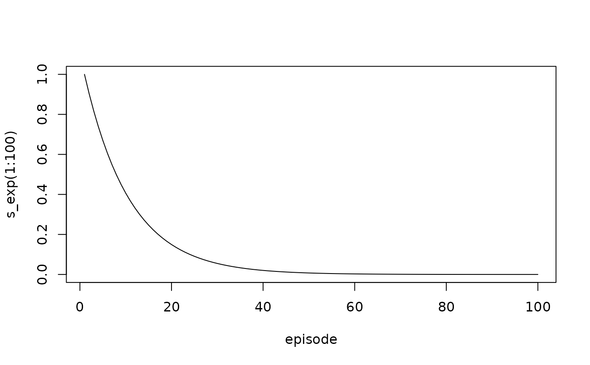
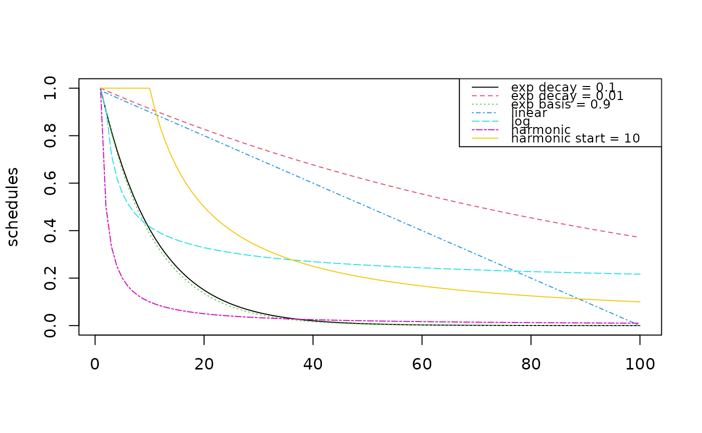

Several schedule functions to reduce learning parameters are available using generator functions.
Usage
schedule_exp(start, decay)
schedule_exp2(start, basis)
schedule_log(start)
schedule_linear(start, end, n)
schedule_harmonic(start, n)Details
Several learning parameters need to be reduced during learning to ensure convergence. We provide several schedule function generators that reduce learning parameters after each processed episode or according to the number of times a state-action combination was tried.
Here are the definitions of the available schedules:
schedule_exp :
function(t) start * exp(-decay * (t - 1))schedule_exp2 :
function(t) start * basis^(t - 1)schedule_log :
function(t) pmin(start/log(1 + t), start)schedule_linear :
step <- (start - end)/n function(t) start - t * stepschedule_harmonic :
function(t) pmin(start/t, 1)
t is the time step, episode number or count starting with 1.
Examples
# create an exponential schedule function
s_exp <- schedule_exp(1, decay = .1)
s_exp
#> function (t)
#> start * exp(-decay * (t - 1))
#> <bytecode: 0x55f2ac22a3a8>
#> <environment: 0x55f2b616dbc0>
# plot the schedule for 100 episodes.
episode <- seq_len(100)
plot(x = episode, s_exp(1:100), type = "l")

# compare some schedule examples
schedules <- cbind(
`exp decay = 0.1` = schedule_exp(1, decay = .1)(1:100),
`exp decay = 0.01` = schedule_exp(1, decay = .01)(1:100),
`exp basis = 0.9` = schedule_exp2(1, basis = .9)(1:100),
`linear` = schedule_linear(1, end = 0, n = 100)(1:100),
`log` = schedule_log(1)(1:100),
`harmonic` = schedule_harmonic(1, n = 100)(1:100),
`harmonic start = 10` = schedule_harmonic(10, n = 100)(1:100)
)
matplot(schedules, type = "l",
col = 1:ncol(schedules),
lty = 1:ncol(schedules)
)
legend("topright",
legend = colnames(schedules),
col = 1:ncol(schedules),
lty = 1:ncol(schedules),
cex = 0.8
)
